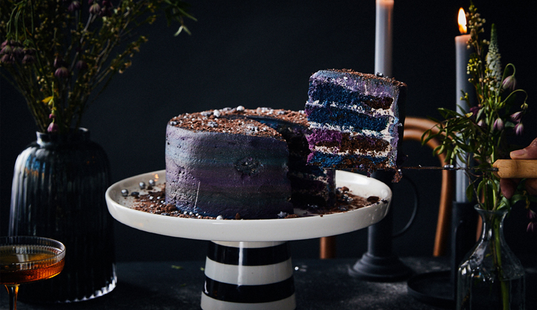

The JellyCake
Inicio
Pasteles
Realizar Pedido
Administrador
Contáctanos
Bienvenido/a a The JellyCake
Dónde los pasteles llegan a toda Galaxia

¿Qué deseas hacer?
¿Deseas conocer nuestros sabores y toppings?
¿Deseas encargar un pastel?
¿Deseas contactarnos?